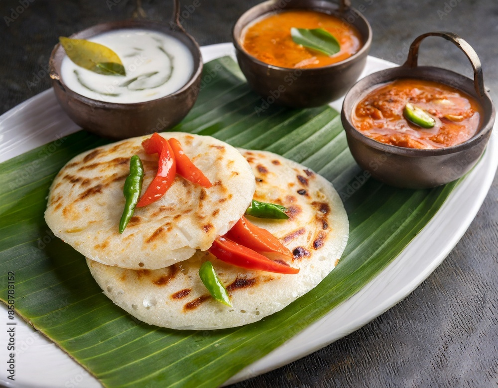

Uthappam

Uthappam, also known as Uttapam, is a popular South Indian breakfast dish originating from the Tamil cuisine. It is a thick, savory pancake made with a fermented rice and lentil batter, typically topped with onions, herbs, and spices.
Ingredients
- Rice Flour
- Urad Dal
- Salt
- Water
- Green Chilies
- Coriander Leaves
- Onions
- Tamatoes
- bell pepper
Steps
- Soak rice and lentils separately for 4-5 hours.
- Grind the rice and lentils into a smooth batter with water and salt.
- Ferment the batter overnight or until it rises and becomes light and airy.
- Heat a non-stick pan or dosa tawa over medium heat.
- Pour a ladleful of batter onto the pan and spread it evenly.
- Top with desired ingredients and drizzle with oil.
- Cook until the base is crispy and the top is cooked through.